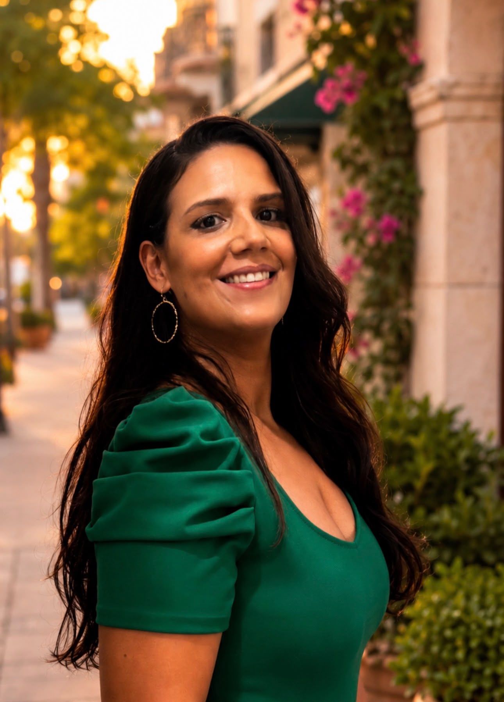

Identify realistic role families instead of treating “pharma” as one job or assuming CRA is always the first step.
Career paths beyond residency for FMGs and IMGs
You became a doctor. Residency isn’t the only path.
If you are trying to understand what your foreign medical degree can realistically mean in the United States, FMG to Pharma helps you evaluate clinical research, pharma, biotech, CRO and related life-sciences paths—without pretending every FMG has the same starting point.
Foreign-trained MD · 14+ years in U.S. clinical research · Site-to-sponsor career progression · MSHS · CCRP
Start with the real bottleneck
A smarter transition starts with diagnosis—not random applications.
Your next move depends on whether the problem is role clarity, entry readiness, résumé/LinkedIn positioning, interview conversion, work access, or whether residency is still your real goal.
Make clinical, academic, quality and research experience legible to U.S. life-sciences employers without inventing experience.
Separate true qualification gaps from targeting, positioning and interview problems before buying another credential.
For qualified FMGs · Founding Pilot
Personalized positioning without a free intro call.
The Reality Check is now the front door. If your answers suggest that role targeting and positioning are the problems worth solving—and industry is a serious career direction—you may be invited to apply for the founder-delivered FMG Career Positioning Pilot.
No Calendly. No complimentary sales call. No waiting around for a meeting. You apply asynchronously; if the pilot is a fit, you receive next steps by email.
Take the Reality Check FirstFounding investment
$397
Limited founder-delivered pilot
What the pilot includes
- Career Positioning Map
- One strategically rewritten résumé
- LinkedIn positioning
- FMG-to-industry transition narrative
- Private debrief after delivery

About the founder
Hi, I’m Patricia.
I’m a foreign-trained physician from the Dominican Republic who built a career in U.S. clinical research rather than practicing medicine in the United States.
Over more than 14 years, I progressed from investigative-site clinical research into sponsor-side clinical operations and senior trial leadership, earned an MSHS in Clinical Research Administration, and became SOCRA CCRP-certified.
I created FMG to Pharma because FMGs deserve realistic guidance about what is possible beyond residency—and clarity about what their next move actually requires.
A message from the founder
A short welcome from Patricia.
Hear why FMG to Pharma exists and the practical, no-hype approach behind the platform.
28 seconds · Includes open captions · Press play when you’re ready.
FMG to Pharma on YouTube
Practical career guidance you can watch.
Use the channel to go deeper on career paths, realistic entry roles, positioning, and how FMGs can translate medical training into the U.S. life-sciences market.
Visit the YouTube ChannelWatch: Stop Applying to CRA Jobs First →Video topics
What you’ll learn on the channel
CRA, CRC and CTA roles, realistic bridge roles, experience expectations, and smarter first moves.
Clinical research, pharma and biotech paths including clinical operations, study start-up, regulatory, safety and medical affairs.
How to translate physician experience into evidence employers understand and improve interview conversion.
How to evaluate industry options, avoid random applications, and decide which path fits your background and goals.
Free 4–5 minute Career Reality Check
Where is your transition actually getting stuck?
Answer questions about your background, work access, residency plans, target roles, applications, interviews and goals. You’ll get an immediate result. If the $397 Founding Pilot appears relevant, you can apply asynchronously from your result—no intro call required.
Educational career guidance only. No job guarantees or immigration advice.